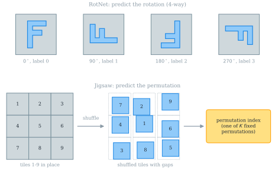
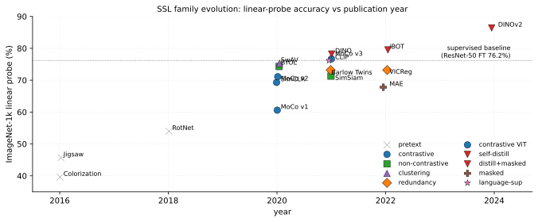

Self-supervised learning emerged as a paradigm to bridge the gap between unsupervised feature learning and supervised representation learning. Early approaches focused on pretext tasks such as image rotation prediction, jigsaw puzzle solving, and colorization; the field then evolved toward contrastive learning, non-contrastive and clustering siamese variants, masked modeling, self-distillation, and language supervision. Each paradigm has characteristic strengths and well-known open problems, walked through paragraph-by-paragraph after the SoTA leaderboard below.
Three observations motivate learning without labels. Unlabelled images are far more plentiful than labelled ones, and the training setups in this chapter can use them: SwAV pretrains a ResNet-50 on one billion uncurated, randomly drawn Instagram images and reaches 66.5% ImageNet top-1 with a linear classifier on the frozen features and 77.8% after fine-tuning, against 60.4% and 77.2% for SimCLR on the same data and 76.5% for training from scratch (Figure 4 of (Caron et al. 2020)). A class label also carries only a small part of what an image contains; the CPC paper puts it as thousands of bits in an image against 10 bits for a label among 1,024 categories (Section 2.1 of (Oord et al. 2018)), so a representation trained only to separate labels need not keep the pose, the background or the number of objects that another task may ask for. Finally, the headline linear-probe comparisons in the leaderboard below pretrain on the same 1.28M ImageNet-1k images with the labels removed (the Data column), so the gains among those rows come from the objective, the backbone and the training configuration rather than from more images, with one exception in BEiT, whose frozen DALL-E tokenizer was pretrained on 250M further images (Section 4.1 of (He et al. 2022)); DINOv2, CLIP and ALIGN are the rows that change the data as well.
__The historical context is important for understanding the field's trajectory._ Early SSL methods (2014-2018) produced features useful for downstream tasks but fell substantially behind supervised pretraining; the bar to beat was set by DeCAF (Donahue et al. 2014), which first showed that mid-layer activations of a supervised ImageNet CNN transfer as off-the-shelf features to almost any downstream classification task, founding the pretrain-then-finetune paradigm that SSL would later challenge. The 2019-2020 period saw SSL close the gap with supervised learning on ImageNet linear probing; by 2021-2022, with DINO and MAE on Vision Transformers, SSL began to exceed supervised pretraining on transfer tasks like COCO detection and ADE20K segmentation. The 2023-2024 era split along two lines. On the vision-only line DINOv2 (Oquab et al. 2024) reached supervised parity with frozen features, so the backbone stopped being a starting point and became a fixed component. On the image-text line OpenCLIP (Cherti et al. 2023) reproduced CLIP on public LAION data and measured its scaling exponent, and SigLIP (Zhai et al. 2023) replaced softmax normalisation with a pairwise sigmoid so the loss no longer needs a global view of the batch. The CLIP line has no single successor, it has several parallel ones, and that is the shape of the era: SSL became the default pretraining stage rather than one more competing method.
The specific pretext tasks explored in early SSL reveal the field's progression. Rotation prediction (Gidaris et al. 2018) trained the network to classify 4-way rotations (0, 90, 180, 270 degrees) on AlexNet, with a training trick that included all four rotated copies of each image in the same minibatch to avoid BatchNorm drift from rotation-mean shifts; rotations were implemented via flip+transpose rather than interpolation to avoid aliasing artifacts that would otherwise let the network cheat on low-level cues. RotNet reached 50.0% ImageNet top-1 when the layers above a frozen conv4 are retrained (Table 4) and 54.4% PASCAL VOC 2007 detection (only 2.4 points below supervised ImageNet pretraining); a linear classifier on single frozen layers, the protocol of DeepCluster's Table 1, peaks at 38.7% on conv3 (Table 5), so the two should not be read against each other without checking which protocol each paper used1. Its failure mode is rotation-invariant classes like jellyfish or aerial views, for which the canonical-orientation prior provides no learning signal2,3. Jigsaw puzzle solving (Noroozi and Favaro 2016) predicted which permutation of a 3x3 tile grid had been applied, reducing the intractable 9!=362,880 permutation space to 100 or 1000 Hamming-well-separated permutations. Noroozi and Favaro's Context-Free Network (CFN) used a Siamese-ennead architecture (9 shared-weight CNN branches each seeing one tile, with cross-tile information only at the final FC fusion) and inserted gaps between tiles to block edge-alignment shortcuts. A further subtlety is the defense against chromatic aberration: natural lenses induce color fringing toward the image edges, which would trivially localize tiles; countered with per-tile channel-mean subtraction or grayscale training4. Jigsaw reached 45.3% ImageNet top-1 under the conv4 protocol (Table 2) and 53.2% VOC detection (Table 1). Colorization (Zhang et al. 2016) reached 40.7% under the same protocol (appendix Table 3) via a 313-way classification formulation (predicting a discretized bin of the ab color space rather than regressing continuous color), with class rebalancing to compensate for the heavy-tail distribution of natural colors2. These methods showed that self-generated supervision could learn useful features, but their reliance on specific geometric or chromatic priors limited generalization; modern methods (instance discrimination, masked modeling) avoid these priors with more generic learning objectives.
The Jigsaw pipeline of Noroozi and Favaro can be traced with shapes (Sections 3.1 to 3.4 and Figure 3 of (Noroozi and Favaro 2016)). An image resized and cropped to 256 x 256 gives a random 225 x 225 crop, split into a 3 x 3 grid of 75 x 75 cells, and a 64 x 64 tile is taken from each cell at a random shift, which leaves an average gap of 11 px between tiles, ranging from 0 to 22. The 9 tiles pass through AlexNet trunks with shared weights up to and including fc6, with stride 2 in conv1 during puzzle training and stride 4 when the weights are transferred; fc6 is 4 x 4 x 256 x 512, so each tile gives a 512-d vector, and the nine fc6 outputs are concatenated, values (derived), into fc7, which leads to a softmax over the permutation set. The CFN has 27.5M parameters against AlexNet's 61M and, trained with labels on 75 x 75 tiles, reaches 57.1% ImageNet top-1 against AlexNet's 57.4%. Training uses SGD without batch normalization on one Titan X, batches of 256 images and a learning rate of 0.01, and converges after 350K iterations in 59.5 hours; puzzles per image. Normalizing the mean and standard deviation of each tile independently removes the low-level statistics that adjacent tiles share, and against chromatic aberration the training set mixes 30% grayscale with 70% colour images and the colour channels of each tile are jittered spatially by 0, 1 or 2 px (Section 4.2). Section 4.2 describes the tiles as 64 x 64 crops from 85 x 85 cells of a 255 x 255 central crop, a 21 px gap, which disagrees with the 75 x 75 cells of Section 3.3; both are given here with their sections. Tables 1 and 2 give the two ablations, both scored by Pascal VOC 2007 detection. With 1000 permutations a larger average Hamming distance helps both the puzzle and the transfer, while the sets of 6 to 10 permutations are solved at 97-99% and transfer worst, which the paper sums up as "a good self-supervised task is neither simple nor ambiguous". Each shortcut defence lowers puzzle accuracy and raises transfer.
| Permutations | Average Hamming distance | Minimum Hamming distance | Jigsaw accuracy | Detection |
|---|---|---|---|---|
| 1000 | 8.00 | 2 | 71 | 53.2 |
| 1000 | 6.35 | 2 | 62 | 51.3 |
| 1000 | 3.99 | 2 | 54 | 50.2 |
| 100 | 8.08 | 2 | 88 | 52.6 |
| 95 | 8.08 | 3 | 90 | 52.4 |
| 85 | 8.07 | 4 | 91 | 52.7 |
| 71 | 8.07 | 5 | 92 | 52.8 |
| 35 | 8.13 | 6 | 94 | 52.6 |
| 10 | 8.57 | 7 | 97 | 49.2 |
| 7 | 8.95 | 8 | 98 | 49.6 |
| 6 | 9 | 9 | 99 | 49.7 |
| Gap | Per-tile normalization | Colour jittering | Jigsaw accuracy | Detection |
|---|---|---|---|---|
| no | yes | yes | 98 | 47.7 |
| yes | no | yes | 90 | 43.5 |
| yes | yes | no | 89 | 51.1 |
| yes | yes | yes | 88 | 52.6 |

| Method | Year | Backbone | Loss | Data | ImageNet1k LP | FT | kNN | COCO box | mask | ADE mIoU | VOC AP50 | iNat LP |
|---|---|---|---|---|---|---|---|---|---|---|---|---|
| RotNet (Gidaris et al. 2018) | 2018 | AlexNet | CE(4-way) | IN1k 1.28M | 50.0 | n/r | n/r | n/r | n/r | n/r | 54.4 | n/r |
| Jigsaw (Noroozi and Favaro 2016) | 2016 | AlexNet | CE(K=1000) | IN1k 1.28M | 45.3 | n/r | n/r | n/r | n/r | n/r | 53.2 | n/r |
| Colorization (Zhang et al. 2016) | 2016 | AlexNet | CE(313-bin) | IN1k 1.28M | 40.7 | n/r | n/r | n/r | n/r | n/r | 46.9 | n/r |
| MoCo v1 (He et al. 2020) | 2020 | ResNet-50 | InfoNCE(τ=0.07) | IN1k 1.28M | 60.6 | n/r | n/r | 40.7 | 35.4 | n/r | 81.5 | n/r |
| SimCLR (T. Chen et al. 2020) | 2020 | ResNet-50 | NT-Xent(τ=0.1) | IN1k 1.28M | 69.3 | n/r | 60.7 | n/r | n/r | n/r | 81.8 | n/r |
| MoCo v2 (X. Chen et al. 2020) | 2020 | ResNet-50 | InfoNCE(τ=0.2) | IN1k 1.28M | 71.1 | n/r | n/r | n/r | n/r | n/r | 82.5 | n/r |
| BYOL (Grill et al. 2020) | 2020 | ResNet-50 | MSE on predictor | IN1k 1.28M | 74.3 | n/r | 64.8 | n/r | n/r | n/r | 81.4 | n/r |
| SwAV (Caron et al. 2020) | 2020 | ResNet-50 | swapped CE on Sinkhorn(K=3000) | IN1k 1.28M | 75.3 | n/r | 65.7 | 41.6 | 37.8 | n/r | 82.6 | n/r |
| Barlow Twins (Zbontar et al. 2021) | 2021 | ResNet-50 | cross-corr(λ=5e-3) | IN1k 1.28M | 73.2 | n/r | 66.0 | 39.2 | 34.3 | n/r | 82.6 | n/r |
| SimSiam (Chen and He 2021) | 2021 | ResNet-50 | neg-cos sim + stop-grad | IN1k 1.28M | 71.3 | n/r | n/r | n/r | n/r | n/r | n/r | n/r |
| VICReg (Bardes et al. 2022) | 2022 | ResNet-50 | var+inv+cov(25,25,1) | IN1k 1.28M | 73.2 | n/r | n/r | n/r | n/r | n/r | 82.4 | n/r |
| MoCo v3 (Chen et al. 2021) | 2021 | ViT-B/16 | InfoNCE(τ=0.2) | IN1k 1.28M | 76.7 | 83.2 | n/r | 47.9 | 42.7 | n/r | n/r | n/r |
| DINO (Caron et al. 2021) | 2021 | ViT-B/16 | softmax CE + center+sharpen | IN1k 1.28M | 78.2 | 82.8 | 76.1 | 50.1 | 43.4 | 46.8 | n/r | n/r |
| MAE (He et al. 2022) | 2022 | ViT-B/16 | MSE on masked patches (75%) | IN1k 1.28M | 68.0 | 83.6 | n/r | 50.3 | 44.9 | 48.1 | n/r | n/r |
| BEiT (Bao et al. 2022) | 2022 | ViT-B/16 | CE on dVAE tokens | IN1k 1.28M | n/r | 83.2 | n/r | 49.8 | 44.4 | 47.1 | n/r | n/r |
| SimMIM (Xie et al. 2022) | 2022 | Swin-B | L1 on masked pixels | IN1k 1.28M | n/r | 84.0 | n/r | 52.3 | n/r | 52.8 | n/r | n/r |
| iBOT (Zhou et al. 2022) | 2022 | ViT-B/16 | DINO-CE + patch CE | IN1k 1.28M | 79.5 | 84.0 | 77.1 | 51.2 | 44.2 | 50.0 | n/r | n/r |
| MaskFeat (Wei et al. 2022) | 2022 | ViT-B | smooth-L1 on HOG | IN1k 1.28M | n/r | 84.0 | n/r | n/r | n/r | n/r | n/r | n/r |
| data2vec (Baevski et al. 2022) | 2022 | ViT-B/16 | smooth-L1 on EMA latent | IN1k 1.28M | n/r | 84.2 | n/r | n/r | n/r | n/r | n/r | n/r |
| I-JEPA (Assran et al. 2023)5 | 2023 | ViT-H/14 | squared L2 on EMA target-encoder features, 4 target blocks | IN1k 1.28M | 79.3 | n/r | n/r | n/r | n/r | n/r | n/r | 47.6 |
| DINOv2 (Oquab et al. 2024) | 2024 | ViT-g/14 | DINO CE + iBOT patch CE, Sinkhorn(3 iters), KoLeo(0.1) | LVD 142M | 86.5 | n/r | 83.5 | n/r | n/r | 53.0 | n/r | 81.6 |
| CLIP (Radford et al. 2021) | 2021 | ViT-L/14, 336 px | InfoNCE(τ learned) | WIT 400M | 76.2* | n/r | n/r | n/r | n/r | n/r | n/r | n/r |
| ALIGN (Jia et al. 2021) | 2021 | EffNet-L2 | InfoNCE(τ learned) | AltText 1.8B | 76.4* | n/r | n/r | n/r | n/r | n/r | n/r | n/r |
The table groups the literature into seven families, walked through in chronological order. Early pretext methods (RotNet, Jigsaw, Colorization) reach modest LP via hand-crafted self-supervisory tasks but suffer the same structural limitations: a hand-crafted signal is too narrow for high-level features2 and is vulnerable to low-level shortcuts the network exploits in place of real understanding4.
Contrastive methods learn representations by maximizing agreement between augmented views of the same image while pushing apart views of different images (T. Chen et al. 2020). Instance discrimination established the foundation by treating each image as its own class; queue-based memory banks and momentum encoders (He et al. 2020) enabled efficient contrastive learning at scale by sidestepping the large-batch dependence6 that simple end-to-end variants like SimCLR require, at the cost of a queue whose features drift from the current encoder during training7. A deeper limitation cuts across the entire contrastive family: the augmentation pipeline declares which transformations should be invariant rather than letting the network learn them3.
Non-contrastive methods including BYOL, SimSiam, and Barlow Twins achieve competitive results without explicit negative pairs, challenging the assumption that negatives are necessary for avoiding collapse. They rely on architectural asymmetries (a predictor head, stop-gradient, or a momentum encoder) or on redundancy reduction objectives to prevent degenerate solutions; why these methods avoid the trivial constant solution remains contested8 and the methods are notoriously hyperparameter-sensitive9.

Masked modeling, inspired by BERT in NLP (Bao et al. 2022), trains models to reconstruct masked portions of images. MAE (He et al. 2022) showed that simple pixel reconstruction with high masking ratios produces excellent representations; BEiT (Bao et al. 2022) introduced a discrete tokenizer trained offline as a separate dVAE pre-stage, which adds compute and constrains downstream by fixing the visual vocabulary10. A persistent diagnostic for the masked modeling family is the linear-probe / fine-tune disagreement: MAE reports weak LP yet strong FT, while BEiT and its derivatives sit elsewhere on the same axis11. Most 2021+ training setups (MAE, BEiT, MoCo v3, DINO) are also ViT-only and have not transferred well to ResNets12.
Self-distillation methods (DINO, iBOT, DINOv2) and clustering methods (SwAV via Sinkhorn assignment + multi-crop) form a third strand: a teacher-student loop without negatives where the teacher is an EMA of the student. DINOv2 (Oquab et al. 2024) combined self-distillation with masked modeling and large-scale scaling (ViT-g/14, 142M curated images) to produce the first SSL backbone matching supervised on every transfer benchmark; the price is production-scale compute beyond academic budgets and a closed-source data-curation pipeline13.
Vision-language language supervision methods like CLIP (Radford et al. 2021) and ALIGN (Jia et al. 2021) use natural language supervision to learn transferable visual representations, enabling zero-shot transfer and catalyzing research in multimodal learning. They also inherit web-text bias14 and the same compute scaling limits19.
The table separates four eras: pretext-based (2016-2018), contrastive (2018-2021), non-contrastive + clustering + masked (2020-2022), and the modern "best of both" line (DINOv2, iBOT, MAE-derivatives). Three readings. First, the contrastive-to-non-contrastive transition was empirical: BYOL and SimSiam dropped negatives entirely with no degradation, refuting the prior assumption that negatives are essential. Second, masked image modeling is not Pareto-dominated by contrastive: MAE has lower linear-probe but higher fine-tuning and downstream segmentation, indicating its representations encode useful structure that is harder to read off linearly. Third, the gap to supervised pretraining (supervised ResNet-50: 76.5%) closed around BYOL/SwAV (2020) for ResNets and around DINO (2021) for ViTs (Figure 2); by 2024 DINOv2 exceeds supervised on every transfer benchmark tested.
The leaderboard records outcomes, not decisions. Three choices fix a method: which pair of things must agree, which space that agreement is measured in, and what stops the agreement from being bought by a constant output. The first is the augmentation or masking policy, the second is the projection target, the third is the collapse mechanism dissected in Understanding Representation Collapse. Backbone and training corpus are separate axes, and the delta ledger under ImageNet Linear Probing shows they move the numbers as hard as the objective does, which is why they have to be held fixed when a method is read against its predecessor. The next table is the leaderboard's other half. It says what changed between two rows where the leaderboard says only by how much, and the rest of this chapter is a walk down its three columns.
| Method | Positive pair | Target space | Anti-collapse mechanism |
|---|---|---|---|
| RotNet (Gidaris et al. 2018) / Jigsaw (Noroozi and Favaro 2016) / Colorization (Zhang et al. 2016) | none, one view | transform index in , , or per pixel | none needed, the label is the transform |
| InstDisc (Wu et al. 2018) | two views of one image | negatives from a per-image memory bank | |
| SimCLR (T. Chen et al. 2020) | two augmented views | in-batch negatives, needs | |
| MoCo v1/v2 (He et al. 2020) | two augmented views | FIFO queue of momentum-encoder keys | |
| NNCLR (Dwibedi et al. 2021) | a view and its nearest neighbour in a support set of 98k | in-batch and support-set negatives | |
| BYOL (Grill et al. 2020) | two augmented views | predictor, EMA target, BN in the heads | |
| SimSiam (Chen and He 2021) | two augmented views | predictor with a 512-d bottleneck, stop-gradient | |
| Barlow Twins (Zbontar et al. 2021) | two augmented views | cross-correlation matrix driven to identity | |
| VICReg (Bardes et al. 2022) | two augmented views | hinge on per-dimension variance, covariance penalty | |
| DeepCluster (Caron et al. 2018) | image and its k-means pseudo-label | , | empty-cluster reassignment, balanced sampling |
| SwAV (Caron et al. 2020) | code of one view predicts the other view | , | Sinkhorn-Knopp equipartition across the batch |
| PCL (Li et al. 2021) | any image in the same k-means cluster | , | clustering at several granularities, per-prototype concentration |
| DINO (Caron et al. 2021) | teacher global view, student any view | , | centering by running mean, sharpening |
| MSN (Assran et al. 2022) | teacher full view, student masked view | , | maximum entropy of the batch-average assignment |
| MAE (He et al. 2022) / SimMIM (Xie et al. 2022) | one view, visible to masked patches | per masked patch | none needed, the target is the input |
| BEiT (Bao et al. 2022) / MaskFeat (Wei et al. 2022) | one view, visible to masked patches | per patch; HOG histograms | none needed, the target is fixed offline |
| data2vec (Baevski et al. 2022) / I-JEPA (Assran et al. 2023) | masked view to unmasked view | per patch, EMA-teacher features | EMA lag, the teacher never sees the student's loss |
| iBOT (Zhou et al. 2022) / DINOv2 (Oquab et al. 2024) | DINO views, plus masked patches | iBOT: , , one head; DINOv2: two heads of | centering and sharpening; DINOv2 centers by Sinkhorn-Knopp and adds KoLeo |
| CLIP (Radford et al. 2021) / ALIGN (Jia et al. 2021) | image and its alt-text caption | shared by image and text | in-batch cross-modal negatives, learned |
Two readings follow from the columns. The target space column is where the field actually moved: from the sphere in 2018-2020, to a large prototype simplex in 2020-2021, to raw pixels in 2021-2022, and to another network's features in 2022 onward. The anti-collapse column shrinks as the target space grows, because a target the model does not produce cannot be gamed by a constant, which is why the masked and pretext rows need no mechanism at all and the joint-embedding rows need one apiece.
Encyclopedia references: self-supervised learning, Vision Transformer, SimCLR, MAE, DINO, DINOv2.
References
Probe-protocol drift: the AlexNet-era SSL papers do not share one ImageNet evaluation. DeepCluster (Caron et al. 2018) reports a separate linear classifier on each frozen convolutional layer and quotes conv3, conv4 and conv5 separately, while the rotation-prediction paper (Gidaris et al. 2018) reports both a linear probe and a non-linear classifier head on top of frozen features. A number from one protocol is not comparable to a number from the other, and much of the apparent disagreement between 2016-2018 results is this and nothing else.↩︎
Semantic narrowness: a hand-crafted pretext signal (rotation, color, puzzle) is too narrow for high-level features and breaks for any class whose canonical orientation or palette is undefined.↩︎
Invariance hand-fixing: the augmentation pipeline declares which transformations should be invariant rather than learning them; covariant features (orientation, depth) are sacrificed.↩︎
Shortcut vulnerability: low-level cues (chromatic aberration, edge alignment) defeat the task without explicit defenses (gaps, channel-mean subtraction, grayscale training).↩︎
I-JEPA reports a single full fine-tuning result, 87.1% ImageNet-1k top-1 for a ViT-H/16 pretrained at 448 px for 300 epochs, against 87.8% for MAE's ViT-H/14 at 448 px after 1600 epochs (Table 15 of (Assran et al. 2023)). It belongs to a different backbone and resolution from the ViT-H/14 row, so the leaderboard's FT cell for I-JEPA stays empty.↩︎
Large-batch dependence: SimCLR-class methods need batch to populate informative negatives, requiring TPU-scale compute and LARS-style optimizers.↩︎
Queue staleness: memory-bank features drift from the current encoder; the queue's effective freshness depends on the EMA momentum and feature dimension.↩︎
Collapse mystery: why no-negative methods avoid the trivial constant solution remains contested (BatchNorm-statistics theories disputed; stop-gradient role only partially understood).↩︎
Hyperparameter fragility: temperature, EMA momentum, predictor depth, centering and sharpening must be hand-tuned per dataset; transfer of hyperparameters across architectures is unreliable.↩︎
Offline tokenizer dependence: a pretrained dVAE adds a separate compute stage and dramatically constrains downstream by fixing the discrete vocabulary.↩︎
LP-FT gap: linear-probe and fine-tune metrics disagree by large margins (MAE has weak LP yet strong FT), making single-metric comparison misleading.↩︎
ViT-only training setups: most 2021+ training setups (DINO, MoCo v3, MAE, BEiT) do not transfer to ResNets; the convolutional case has been comparatively under-served since 2021.↩︎
Production-scale compute: pretraining on images costs tens of thousands of GPU-hours, 22,016 A100 GPU-hours for one DINOv2-g run (Table 14 of (Oquab et al. 2024)), beyond academic budgets, and most data-curation pipelines are closed source.↩︎
Web-text bias: alt-text supervision inherits stereotype, popularity-skew, and quality artifacts; produces biased zero-shot classifiers without an obvious mitigation.↩︎